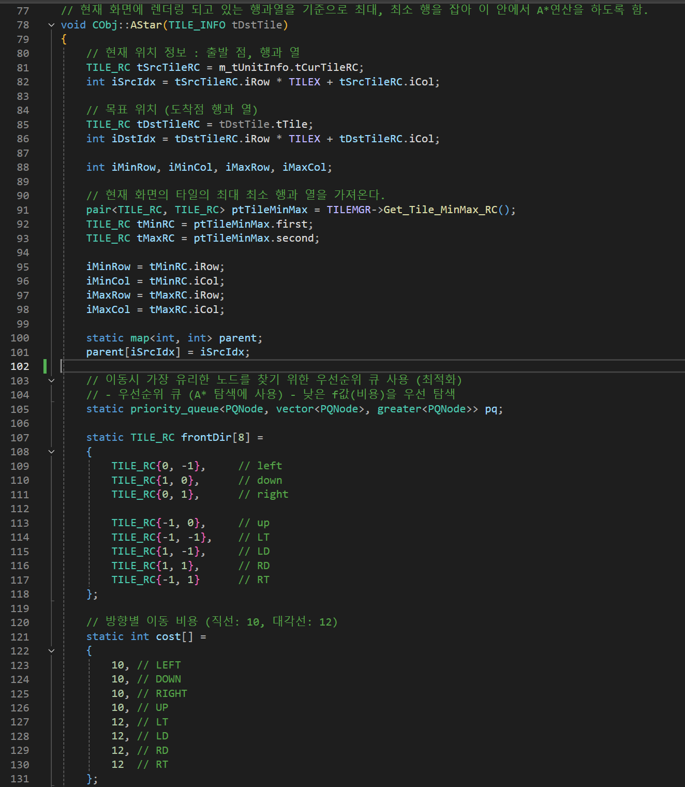
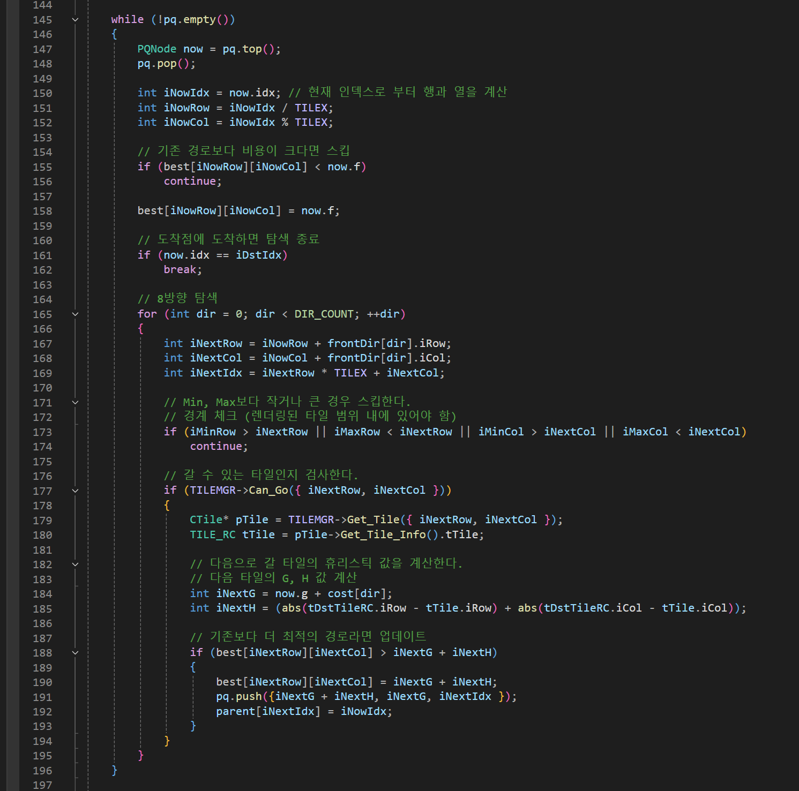
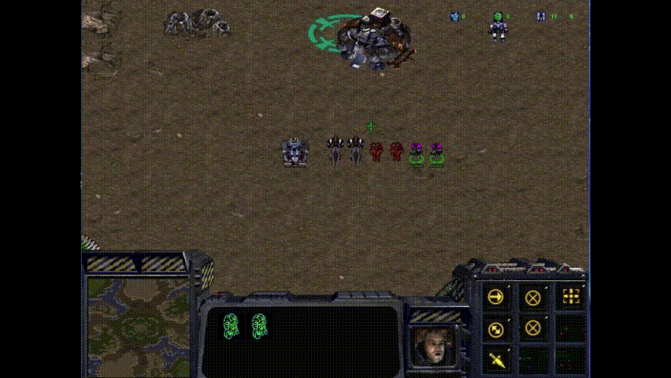
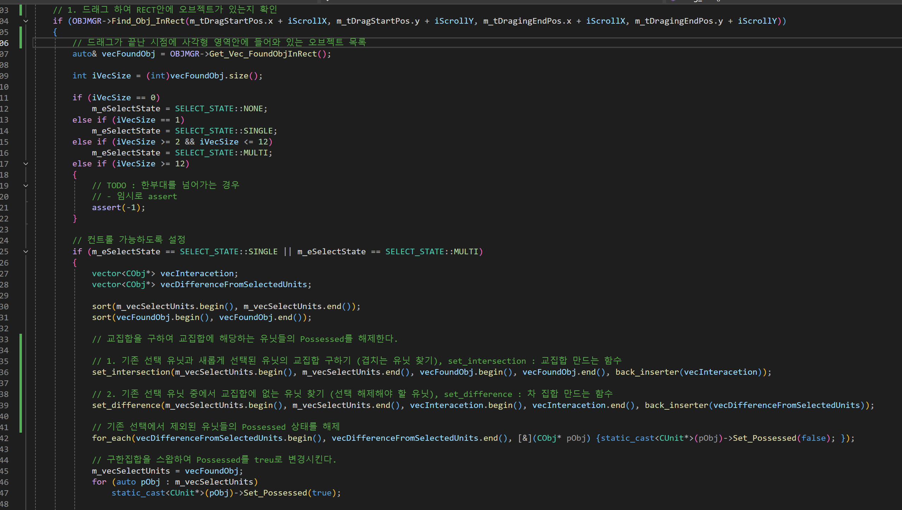
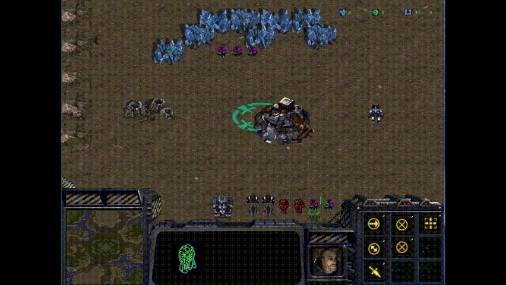
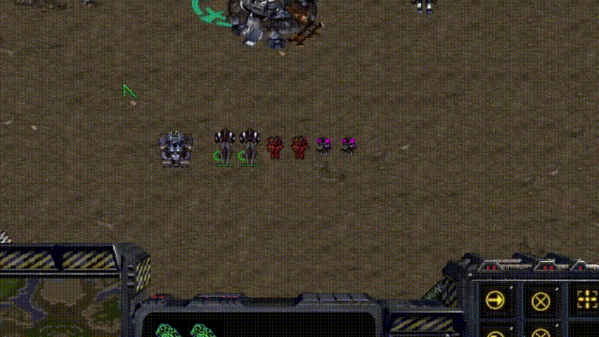
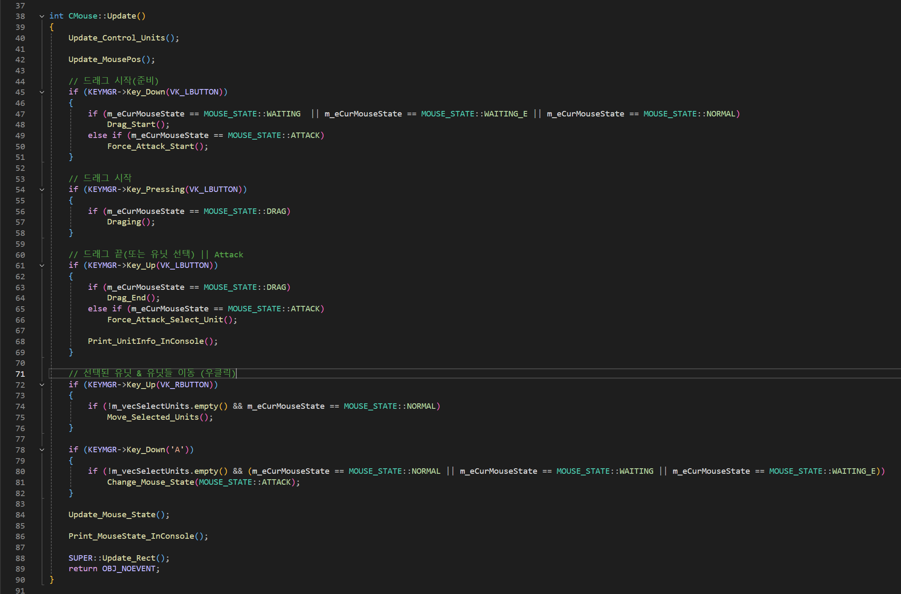
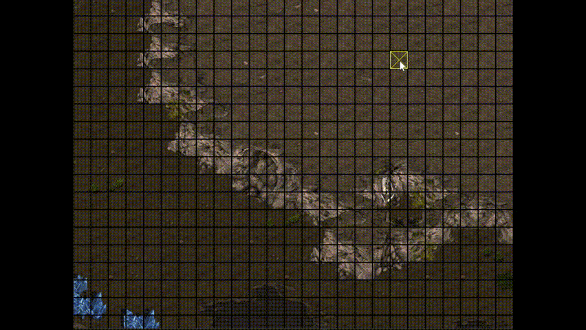
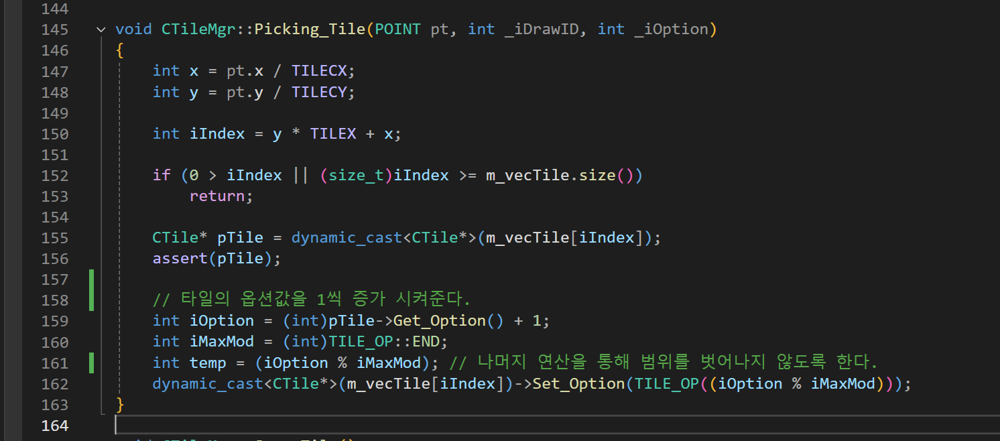

StarCraft 모작(맵툴구현, 2D)
깃허브 링크: https://github.com/starkshn/-
영상 링크

C++과 WIN32API로 제작한 스타크래프트 게임 모작 영상입니다.
제작자 : 김남영(본인)
제작 년도 : 2024.05.17~2024.05.29
제작 기간 : 2주
소스 코드 : https://github.com/starkshn/-
조작 방법
기존 스타크래프트와 거의 동일하지만 디버깅용 기능이 있어 조작방법을 적어놓았습니다.
로그인 화면 & 미션 설명화면
- Enter 키 : 누르면 시작
에디터 맵
- S키 : 변경된 타일 저장
- Q키 : 메인 화면으로 돌아가기
- 마우스 좌 클릭 : 타일 변경
인게임
- P키 : 적군 마린 서환
- P키 + 2 : 5초마다 적군 마린 2마리씩 스폰
- p키 + 3 : 5초마다 적군 마린 3마리씩 스폰
- 0 키 : 타일 렌더
- 9 키 : 자원 치트키
- W 키 : 승리 (치트키)
SCV
- B 키 : 건물 짓는 UI변경
- F 키 : 팩토리 UI로 변경
- Q 키 : 돌아가기
마린
- T : 스팀팩 사용
시즈탱크
- O 키 : 시즈모드 설정 및 해제
아비터
- R 키 : 리콜
프로젝트 의도
길찾기 알고리즘(AStar), 2D 스프라이트 애니매이션, 마우스 Picking 등을 적용하여 게임의 기본 구조 원리를 이해하고 학습하기 위한 프로젝트입니다.
프로젝트 기능 및 구현
- 움직임이 가능한 모든 지상군 유닛들에 대해 A*알고리즘 적용
- 차집합, 교집합을 통해 선택되지 않은 유닛 배제 기능 구현
- 마우스 상태(더블 클릭, 드래그) 및 기능구현
- 맵툴 구현
A*알고리즘 적용
구현 결과

구현 과정
스타 유닛들의 가장 부모가 되는 Obj클래스에 AStar함수를 구현하였습니다.
best라는 이차원 배열의 초기 값을 INT32_MAX로 설정한 후 비용이 가장 작은 경로를 찾을 수 있도록 휴리스틱 값을 계산해나가며 A* 알고리즘을 적용하였습니다.
Code
- 전체 Code
📝 Code
// 현재 화면에 렌더링 되고 있는 행과열을 기준으로 최대, 최소 행을 잡아 이 안에서 A*연산을 하도록 함.
void CObj::AStar(TILE_INFO tDstTile)
{
// 현재 위치 정보 : 출발 점, 행과 열
TILE_RC tSrcTileRC = m_tUnitInfo.tCurTileRC;
int iSrcIdx = tSrcTileRC.iRow * TILEX + tSrcTileRC.iCol;
// 목표 위치 (도착점 행과 열)
TILE_RC tDstTileRC = tDstTile.tTile;
int iDstIdx = tDstTileRC.iRow * TILEX + tDstTileRC.iCol;
int iMinRow, iMinCol, iMaxRow, iMaxCol;
// 현재 화면의 타일의 최대 최소 행과 열을 가져온다.
pair<TILE_RC, TILE_RC> ptTileMinMax = TILEMGR->Get_Tile_MinMax_RC();
TILE_RC tMinRC = ptTileMinMax.first;
TILE_RC tMaxRC = ptTileMinMax.second;
iMinRow = tMinRC.iRow;
iMinCol = tMinRC.iCol;
iMaxRow = tMaxRC.iRow;
iMaxCol = tMaxRC.iCol;
static map<int, int> parent;
parent[iSrcIdx] = iSrcIdx;
// 이동시 가장 유리한 노드를 찾기 위한 우선순위 큐 사용 (최적화)
// - 우선순위 큐 (A* 탐색에 사용) - 낮은 f값(비용)을 우선 탐색
static priority_queue<PQNode, vector<PQNode>, greater<PQNode>> pq;
static TILE_RC frontDir[8] =
{
TILE_RC{0, -1}, // left
TILE_RC{1, 0}, // down
TILE_RC{0, 1}, // right
TILE_RC{-1, 0}, // up
TILE_RC{-1, -1}, // LT
TILE_RC{1, -1}, // LD
TILE_RC{1, 1}, // RD
TILE_RC{-1, 1} // RT
};
// 방향별 이동 비용 (직선: 10, 대각선: 12)
static int cost[] =
{
10, // LEFT
10, // DOWN
10, // RIGHT
10, // UP
12, // LT
12, // LD
12, // RD
12 // RT
};
enum
{
DIR_COUNT = 8,
};
int iG = 0;
int iH = (abs(tDstTileRC.iRow - tSrcTileRC.iRow) + abs(tDstTileRC.iCol - tSrcTileRC.iCol)); // 휴리스틱 값
pq.push(PQNode{ iG + iH, iG, iSrcIdx });
best[tSrcTileRC.iRow][tSrcTileRC.iCol] = iG + iH;
while (!pq.empty())
{
PQNode now = pq.top();
pq.pop();
int iNowIdx = now.idx; // 현재 인덱스로 부터 행과 열을 계산
int iNowRow = iNowIdx / TILEX;
int iNowCol = iNowIdx % TILEX;
// 기존 경로보다 비용이 크다면 스킵
if (best[iNowRow][iNowCol] < now.f)
continue;
best[iNowRow][iNowCol] = now.f;
// 도착점에 도착하면 탐색 종료
if (now.idx == iDstIdx)
break;
// 8방향 탐색
for (int dir = 0; dir < DIR_COUNT; ++dir)
{
int iNextRow = iNowRow + frontDir[dir].iRow;
int iNextCol = iNowCol + frontDir[dir].iCol;
int iNextIdx = iNextRow * TILEX + iNextCol;
// Min, Max보다 작거나 큰 경우 스킵한다.
// 경계 체크 (렌더링된 타일 범위 내에 있어야 함)
if (iMinRow > iNextRow || iMaxRow < iNextRow || iMinCol > iNextCol || iMaxCol < iNextCol)
continue;
// 갈 수 있는 타일인지 검사한다.
if (TILEMGR->Can_Go({ iNextRow, iNextCol }))
{
CTile* pTile = TILEMGR->Get_Tile({ iNextRow, iNextCol });
TILE_RC tTile = pTile->Get_Tile_Info().tTile;
// 다음으로 갈 타일의 휴리스틱 값을 계산한다.
// 다음 타일의 G, H 값 계산
int iNextG = now.g + cost[dir];
int iNextH = (abs(tDstTileRC.iRow - tTile.iRow) + abs(tDstTileRC.iCol - tTile.iCol));
// 기존보다 더 최적의 경로라면 업데이트
if (best[iNextRow][iNextCol] > iNextG + iNextH)
{
best[iNextRow][iNextCol] = iNextG + iNextH;
pq.push({iNextG + iNextH, iNextG, iNextIdx });
parent[iNextIdx] = iNowIdx;
}
}
}
}
// 경로 조립 (부모를 추적한다)
int iIdx = iDstIdx;
while (true)
{
// 시작점은 자기 자신이 곧 부모이다 == 끝 도달
if (parent[iIdx] == iIdx)
break;
// 지나가야하는 경로의 경우 노란색으로 변경한다.
CTile* pTile = TILEMGR->Get_Tile(iIdx);
pTile->Set_Option(TILE_OP::PASSBY);
m_stkPath.push(pTile->Get_Tile_Info());
iIdx = parent[iIdx];
}
// 초기화
for (int i = iMinRow; i <= iMaxRow; ++i)
{
for (int j = iMinCol; j <= iMaxCol; ++j)
best[i][j] = INT32_MAX;
}
while (!pq.empty())
pq.pop();
parent.clear();
}8방향 탐색을 할 수 있도록 frontDir 배열을 만들고 8방향에 대한 가중치를 두었습니다.

최적의 경로를 A*로 찾고 지나온 경로를 확인하기 위해 std::stack을 활용하여 경로 추적을 하였습니다.

차집합, 교집합 활용
구현 결과

구현 과정
마우스 드래그가 끝난 시점에 사각형 영역안에 들어와 있는 유닛들 목록을 찾아와 지역변수로 잠시 저장하고 원래 선택되어 있던 유닛들과 교집합을 구해줍니다.
그리고 기존에 선택되어 있던 유닛들과 교집합 유닛들과의 차집합을 구하여 현재 선택되지 않은 유닛들 목록을 구합니다.
선택되지 않은 유닛들의 상태에 Possesed라는 값을 false로 설정하여 컨트롤 하지 못하도록 구현하였습니다.
Code

- 전체 Code
📝 Code
void CMouse::Drag_End()
{
m_bDraging = false;
int iScrollX = -(int)SCROLLMGR->Get_ScrollX();
int iScrollY = -(int)SCROLLMGR->Get_ScrollY();
// 1. 드래그 하여 RECT안에 오브젝트가 있는지 확인
if (OBJMGR->Find_Obj_InRect(m_tDragStartPos.x + iScrollX, m_tDragStartPos.y + iScrollY, m_tDragingEndPos.x + iScrollX, m_tDragingEndPos.y + iScrollY))
{
// 드래그가 끝난 시점에 사각형 영역안에 들어와 있는 오브젝트 목록
auto& vecFoundObj = OBJMGR->Get_Vec_FoundObjInRect();
int iVecSize = (int)vecFoundObj.size();
if (iVecSize == 0)
m_eSelectState = SELECT_STATE::NONE;
else if (iVecSize == 1)
m_eSelectState = SELECT_STATE::SINGLE;
else if (iVecSize >= 2 && iVecSize <= 12)
m_eSelectState = SELECT_STATE::MULTI;
else if (iVecSize >= 12)
{
// TODO : 한부대를 넘어가는 경우
// - 임시로 assert
assert(-1);
}
// 컨트롤 가능하도록 설정
if (m_eSelectState == SELECT_STATE::SINGLE || m_eSelectState == SELECT_STATE::MULTI)
{
vector<CObj*> vecInteracetion;
vector<CObj*> vecDifferenceFromSelectedUnits;
sort(m_vecSelectUnits.begin(), m_vecSelectUnits.end());
sort(vecFoundObj.begin(), vecFoundObj.end());
// 교집합을 구하여 교집합에 해당하는 유닛들의 Possessed를 해제한다.
// 1. 기존 선택 유닛과 새롭게 선택된 유닛의 교집합 구하기 (겹치는 유닛 찾기), set_intersection : 교집합 만드는 함수
set_intersection(m_vecSelectUnits.begin(), m_vecSelectUnits.end(), vecFoundObj.begin(), vecFoundObj.end(), back_inserter(vecInteracetion));
// 2. 기존 선택 유닛 중에서 교집합에 없는 유닛 찾기 (선택 해제해야 할 유닛), set_difference : 차 집합 만드는 함수
set_difference(m_vecSelectUnits.begin(), m_vecSelectUnits.end(), vecInteracetion.begin(), vecInteracetion.end(), back_inserter(vecDifferenceFromSelectedUnits));
// 기존 선택에서 제외된 유닛들의 Possessed 상태를 해제
for_each(vecDifferenceFromSelectedUnits.begin(), vecDifferenceFromSelectedUnits.end(), [&](CObj* pObj) {static_cast<CUnit*>(pObj)->Set_Possessed(false); });
// 구한집합을 스왑하여 Possessed를 treu로 변경시킨다.
m_vecSelectUnits = vecFoundObj;
for (auto pObj : m_vecSelectUnits)
static_cast<CUnit*>(pObj)->Set_Possessed(true);
// TODO
// - StageScene UI 변경
vecFoundObj.clear();
}
}
// 드래그 범위 내에 들어온 오브젝트가 하나도 없는 경우
// 현재 버튼을 땐 그 위치에 오브젝트가 있는지 확인한다.
Vec2 tLTMousePos = Get_Scrolled_Mouse_Pos();
// 아래의 경우는 드래그를 엄청 조금 했거나 그냥 그자리에서 버튼을 땐 경우이다.
// 현재 마우스 좌표와 충돌하는 오브젝트가 있는지 검사한다.
if (Check_SingleUnit_AtMousePos(tLTMousePos.x, tLTMousePos.y))
{
CObj* pObj = OBJMGR->Get_SingleObj_ColWithMouse();
assert(pObj);
if (m_vecSelectUnits.size() == 0)
{
m_vecSelectUnits.push_back(pObj);
static_cast<CUnit*>(m_vecSelectUnits.back())->Set_Possessed(true);
}
else if (m_vecSelectUnits.size() == 1)
{
static_cast<CUnit*>(m_vecSelectUnits[0])->Set_Possessed(false);
m_vecSelectUnits.erase(m_vecSelectUnits.begin());
m_vecSelectUnits.push_back(pObj);
static_cast<CUnit*>(m_vecSelectUnits.back())->Set_Possessed(true);
}
else if (m_vecSelectUnits.size() >= 2)
{
// 좌클릭시 충돌한 단일 오브젝트를 가져온다.
vector<CObj*> vecIntersection; // 교집합
vector<CObj*> vecDiff;
vecIntersection.push_back(pObj);
sort(m_vecSelectUnits.begin(), m_vecSelectUnits.end());
set_difference(m_vecSelectUnits.begin(), m_vecSelectUnits.end(), vecIntersection.begin(), vecIntersection.end(), back_inserter(vecDiff));
for_each(vecDiff.begin(), vecDiff.end(), [&](CObj* pObj) {static_cast<CUnit*>(pObj)->Set_Possessed(false); });
for (auto iter = m_vecSelectUnits.begin(); iter != m_vecSelectUnits.end();)
{
CUnit* pUnit = static_cast<CUnit*>(*iter);
if (pUnit->Get_Possessed() == false)
iter = m_vecSelectUnits.erase(iter);
else
++iter;
}
}
}
// 현재 씬에게 렌더할 목록들을 전달한다.
m_pStage->Set_Vec_Render_Units(m_vecSelectUnits);
// 원래 상태로 되돌린다.
Reset_Mouse_State();
}마우스 상태 및 기능
구현 결과

더블 클릭

드래그
구현 과정
- 마우스 더블 클릭
마우스 좌클릭 ‘눌렀다-땟다’라는 것을 하나의 동작으로 보고 ‘땟다’라는 시점 부터 시간을 누적하여 특정시간 안에 다시 ‘눌렸다’라는 입력이 들어오면 더블클릭이라 판정하였습니다. 이때 선택되는 유닛들도 같은 종류의 유닛들만 선택이 될 수 있도록 하였습니다.
- 마우스 드래그
마우스를 ‘눌렸다’라는 상태에서 여전히 누르고 있으면 마우스 상태를 Drag상태로 변경하고 알맞은 텍스쳐로 렌더링하며 사각형 영역을 생성할 수 있도록 하였습니다.
Code

매틱 마우스의 상태를 처리하는 코드입니다.
키입력에따라 마우스의 상태를 변경하고 실행할 함수를 변경하여 각종 이벤트, 유닛선택등의 로직을 처리할 수 있게 하는 로직입니다.
맵툴 구현
구현 결과

구현 과정
해당 맵의 텍스쳐를 가져오고 2차원 배열을 설정한 크기에 따라 깔아준 뒤 마우스 피킹을 통해 선택한 타일의 타입을 변경하고 타입에 따라 색이 변경될 수 있도록 하였습니다. 빨간 색은 지나갈 수 없는 영역으로 설정하여 구현하였습니다.
타일의 타입이 많지 않아 클릭으로 타입의 값을 1씩 증가시키며 타입을 변경하고 나머지 연산자를 통해 다시 원래대로 돌아올 수있도록 구현하였습니다.
Code
